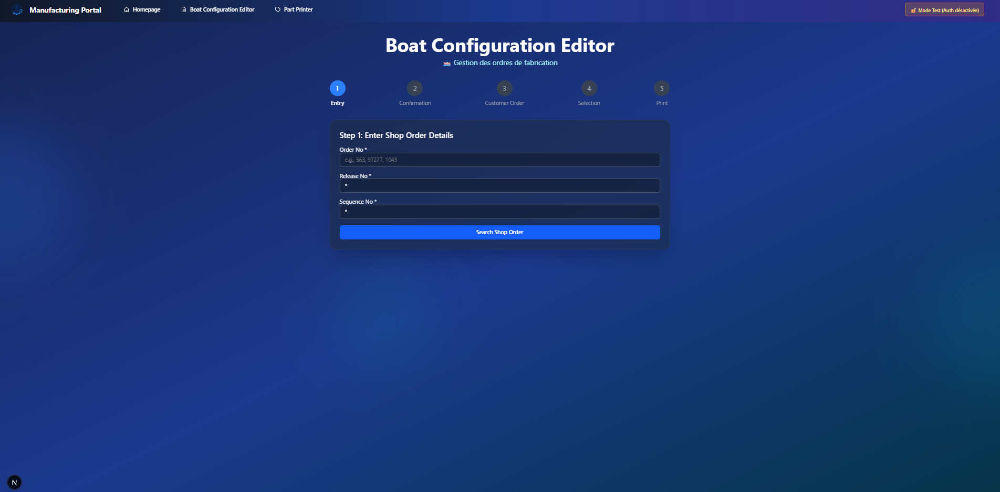
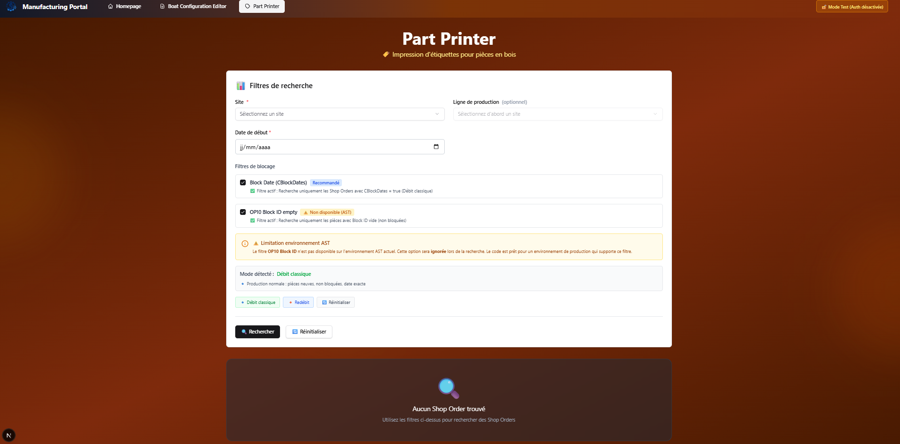

Développé par : Romain BOTTERO - Alternant Concepteur d'Application
1. Vue d'Ensemble du Portal
Contexte & Objectif
Le Manufacturing Portal est une plateforme web centralisée développée pour Bénéteau qui regroupe plusieurs outils de production. L'objectif est de simplifier et standardiser l'accès aux outils numériques utilisés sur les sites de production.
Principe Fondamental
Au lieu de développer chaque outil de manière isolée, nous avons construit une infrastructure commune où chaque nouvel outil bénéficie automatiquement de composants, services et fonctionnalités partagés.
Principe : Tout ce qui est utilisé par au moins 2 outils est placé dans shared/ (partagé). Ce qui est propre à un seul outil reste dans son dossier dédié.
2.2 Groupement de Routes (Route Grouping)
Le portal utilise une technique d'organisation appelée route grouping qui permet de structurer le code sans affecter les URLs visibles par les utilisateurs.
URL visible par l'utilisateur :
https://portal.beneteau.com/boat-configuration
https://portal.beneteau.com/part-printer
Organisation du code (invisible pour l'utilisateur) :
src/app/(tools)/boat-configuration/
src/app/(tools)/part-printer/
Avantage : Le dossier (tools) permet de regrouper tous les outils dans le code sans que cela n'apparaisse dans l'URL. Cela facilite la maintenance et la navigation dans le projet.
Azure AD : Authentification de l'utilisateur (qui est-il ?)
OAuth2 IFS : Autorisation d'accès aux données IFS (que peut-il faire ?)
Session utilisateur :
Durée : 2 heures d'inactivité
Renouvellement : Automatique en arrière-plan
Déconnexion : Manuelle ou expiration automatique
3. Les Outils et Workflows
3.1 Boat Configuration Editor
Objectif Métier
Permettre aux opérateurs d'imprimer rapidement les documents de configuration des bateaux (formulaire MA_FO_CR_1419) en recherchant un Shop Order dans IFS Cloud.
Workflow Simplifié
flowchart LR
A["📝 Saisie Shop Order"] --> B["🔍 Recherche dans IFS"]
B --> C["📊 Récupération Serial Number"]
C --> D["🖨️ Sélection imprimante"]
D --> E["✅ Impression document"]
style A fill:#3498db,stroke:#2980b9,color:#fff
style B fill:#3498db,stroke:#2980b9,color:#fff
style C fill:#3498db,stroke:#2980b9,color:#fff
style D fill:#3498db,stroke:#2980b9,color:#fff
style E fill:#2ecc71,stroke:#27ae60,color:#fff
Problème Résolu
Avant : L'opérateur devait naviguer dans plusieurs écrans IFS, noter manuellement le Serial Number, puis lancer l'impression.
Après : L'opérateur saisit uniquement le numéro de Shop Order. Le système récupère automatiquement toutes les informations nécessaires et imprime en un clic.
Statut
🧪 En phase de test - Déploiement prévu novembre 2025
Interface de l'Outil

Interface de recherche et d'impression des configurations de bateaux
3.2 Part Printer (Étiquettes Bois)
Objectif Métier
Automatiser l'impression d'étiquettes pour les pièces en bois en consolidant les informations provenant de plusieurs sources IFS Cloud (Shop Orders, opérations, caractéristiques techniques).
Workflow Simplifié
flowchart TD
A["🔎 Filtres (Site, Date, Ligne)"] --> B["📋 Liste des Shop Orders"]
B --> C["🔍 Extraction données techniques"]
C --> D["📊 Consolidation & groupement"]
D --> E["📄 Génération PDF étiquettes"]
E --> F["🖨️ Impression par lot"]
style A fill:#9b59b6,stroke:#7d3c98,color:#fff
style B fill:#9b59b6,stroke:#7d3c98,color:#fff
style C fill:#9b59b6,stroke:#7d3c98,color:#fff
style D fill:#9b59b6,stroke:#7d3c98,color:#fff
style E fill:#9b59b6,stroke:#7d3c98,color:#fff
style F fill:#2ecc71,stroke:#27ae60,color:#fff
Complexité Technique
Cet outil nécessite d'interroger 5 endpoints différents dans IFS Cloud pour consolider les informations d'une seule étiquette. Cette complexité a nécessité un travail approfondi d'exploration et d'analyse des APIs IFS Cloud.
Traitement Complexe des Données
Étape 1 : Collecte Multi-Sources
flowchart TB
subgraph IFS["☁️ IFS Cloud"]
SO["Shop Order OrderNo, PartNo"]
MAT["Material Lines Raw Material"]
OP["Operations Block ID OP10"]
PART["Master Part TechnicalSpecNo"]
ATTR["Technical Attributes 50+ attributs"]
end
subgraph Extraction["🔍 Extraction"]
E1["Récupération Shop Order"]
E2["Navigation MaterialArray"]
E3["Requête Operation 10"]
E4["Navigation PartCatalog"]
E5["Filtrage TechnicalSpec"]
end
SO --> E1
MAT --> E2
OP --> E3
PART --> E4
ATTR --> E5
style IFS fill:#e74c3c,stroke:#c0392b,color:#fff
style Extraction fill:#3498db,stroke:#2980b9,color:#fff
flowchart TD
subgraph Sources["📊 Données Collectées"]
D1["Shop Order 454853"]
D2["Raw Material D8588H"]
D3["Block ID B25"]
D4["Generic Code 1000014690"]
D5["Length 1904mm"]
D6["Varnish RCTV1210"]
end
subgraph Consolidation["⚙️ Consolidation"]
C1["Validation données complètes"]
C2["Groupement par Raw Material & Varnish"]
C3["Tri par Length décroissant"]
end
subgraph Output["📄 Génération"]
O1["Code-barres CODE128"]
O2["Étiquette PDF A4 paysage"]
O3["Lot d'impression groupé"]
end
D1 & D2 & D3 & D4 & D5 & D6 --> C1
C1 --> C2
C2 --> C3
C3 --> O1 & O2 & O3
style Sources fill:#e74c3c,stroke:#c0392b,color:#fff
style Consolidation fill:#f39c12,stroke:#d68910,color:#fff
style Output fill:#2ecc71,stroke:#27ae60,color:#fff
Cette architecture de traitement permet de transformer des données complexes et éparpillées en étiquettes prêtes à l'impression, tout en optimisant les performances grâce à des requêtes ciblées.
Types d'Étiquettes
Débit classique : Étiquettes pour les nouvelles pièces à débiter
Redébit : Étiquettes pour les pièces nécessitant un second débit
Chaque mode a ses propres règles métier qui sont automatiquement appliquées par l'outil.
Statut
🧪 En phase de test - Déploiement prévu novembre 2025
Interface de l'Outil

Interface de filtrage et de génération d'étiquettes pour les pièces en bois
3.3 Comparaison des Outils
Aspect
Boat Configuration Editor
Part Printer
Complexité
🟢 Simple (3 étapes)
🟠 Complexe (7 étapes)
Sources IFS
2 endpoints
5+ endpoints
Volume
1 document à la fois
Batch (10-100 étiquettes)
Utilisateurs
Sites d'assemblage
Ateliers bois
3.4 Traitement des Données : De l'API à l'Étiquette
Les deux outils illustrent différents niveaux de complexité dans le traitement des données IFS.
Boat Configuration Editor : Workflow Simple
flowchart LR
Input["📝 Shop Order 97277"] --> API1["🔌 API 1 ShopOrderHandling"]
API1 --> Parse["⚙️ Extraction DOP ID"]
Parse --> API2["🔌 API 2 DopHeaderHandling"]
API2 --> Output["✅ Serial Number LG5MA0114"]
style Input fill:#3498db,stroke:#2980b9,color:#fff
style API1 fill:#9b59b6,stroke:#7d3c98,color:#fff
style Parse fill:#f39c12,stroke:#d68910,color:#fff
style API2 fill:#9b59b6,stroke:#7d3c98,color:#fff
style Output fill:#2ecc71,stroke:#27ae60,color:#fff
Principe : Traitement linéaire avec 2 APIs en séquence.
Principe : Traitement parallèle avec 5 APIs et consolidation finale.
Différence clé : Le Part Printer nécessite une orchestration complexe de multiples sources de données et une logique de consolidation avancée.
Annexe : Méthodologie d'Exploration IFS Cloud
Le développement des outils a nécessité une méthodologie rigoureuse pour comprendre et exploiter les APIs IFS Cloud.
Approche Itérative
flowchart LR
A["📋 Besoin métier"] --> B["🔍 Exploration APIs IFS"]
B --> C["🧪 Tests endpoints"]
C --> D{"✅ Données correctes?"}
D -->|Non| B
D -->|Oui| E["⚙️ Implémentation service"]
E --> F["✅ Validation"]
style A fill:#3498db,stroke:#2980b9,color:#fff
style B fill:#f39c12,stroke:#d68910,color:#fff
style C fill:#9b59b6,stroke:#7d3c98,color:#fff
style D fill:#e74c3c,stroke:#c0392b,color:#fff
style E fill:#2ecc71,stroke:#27ae60,color:#fff
style F fill:#27ae60,stroke:#1e8449,color:#fff
Techniques Utilisées
Analyse des métadonnées OData : Étude des $metadata pour comprendre la structure
Navigation progressive : Tests des relations entre entités (NavigationProperty)
Optimisation des filtres : Utilisation de $filter, $select, $expand pour limiter les données
Documentation systématique : Chaque découverte documentée pour référence future
Exemple Concret : Extraction Raw Material
Problème : Aucun endpoint direct pour récupérer les matières premières d'une opération.
Solution trouvée :
Navigation OData : ShopOrds(...)/MaterialArray
Filtrage côté code pour isoler l'opération 10 (OP10)
Résultat : Accès aux données sans endpoint dédié
Cette approche méthodique a permis de surmonter les limitations de la documentation IFS et d'exploiter pleinement les capacités de l'API OData.
4. Déploiement et Infrastructure Azure
4.1 Architecture de Déploiement
Le Manufacturing Portal est conçu pour être déployé sur Microsoft Azure avec une infrastructure moderne et sécurisée.
Azure App Service : Hébergement de l'application Next.js
Application Insights : Monitoring, logs, alertes
Key Vault : Stockage sécurisé des secrets (API keys, tokens)
Azure AD : Authentification et gestion des identités
Monitoring & Alertes :
✅ Temps de réponse API
✅ Taux d'erreur
✅ Disponibilité (uptime)
✅ Utilisation ressources (CPU, RAM)
✅ Logs centralisés
5. Évolutions Futures
5.1 Améliorations Planifiées Court Terme
Boat Configuration Editor : Imprimantes Favorites
Problème actuel : L'utilisateur doit sélectionner l'imprimante à chaque impression.
Solution proposée : Mémoriser les préférences utilisateur.
flowchart LR
User["👤 Utilisateur"] --> First["1ère utilisation Sélection imprimante"]
First --> Save["💾 Sauvegarde préférence"]
Save --> Next["Prochaine utilisation"]
Next --> Auto["🎯 Pré-sélection automatique"]
Auto --> Modify["✏️ Modification possible"]
style User fill:#34495e,stroke:#2c3e50,color:#fff
style First fill:#3498db,stroke:#2980b9,color:#fff
style Save fill:#2ecc71,stroke:#27ae60,color:#fff
style Auto fill:#f39c12,stroke:#d68910,color:#fff
Fonctionnalités :
✅ Sauvegarde imprimante favorite par utilisateur
✅ Sauvegarde langue préférée
✅ Pré-sélection automatique au prochain usage
✅ Possibilité de modifier à tout moment
Stockage :
Option 1 : Local Storage (navigateur)
Option 2 : Base de données avec profil utilisateur
Recommandation : Local Storage pour MVP, base de données pour V2
Part Printer : Filtres Prédéfinis
Fonctionnalité : Sauvegarder des combinaisons de filtres fréquentes.
Exemple :
"BDR - Ligne MASSIF - Débit"
"FR017 - Toutes lignes - Redébit"
Conclusion
Le Manufacturing Portal représente une approche moderne et évolutive du développement d'outils de production. En mutualisant l'infrastructure commune et en standardisant l'architecture, nous garantissons :
✅ Rapidité : Développement accéléré des nouveaux outils
✅ Qualité : Standards uniformes et code testé
✅ Évolutivité : Architecture prête pour 10+ outils
✅ Maintenance : Corrections et améliorations partagées
✅ Expérience utilisateur : Interface cohérente et intuitive